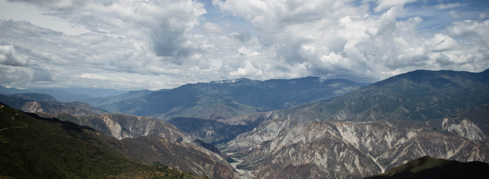

RoviTour
Descubre experiencias turísticas únicas
Descubre experiencias turísticas únicas

RoviTour es un sitio web dedicado a promover el turismo de la Provincia de Garcia Rovira de Santander, ofreciendo información sobre restaurantes,hospedajes y los sitios turisticos Nuestro objetivo es brindar una experiencia sencilla y útil para quienes desean conocer y disfrutar la riqueza cultural y natural de la región.
Promover el turismo de la Provincia de Garcia rovira de santander mediante una plataforma digital que facilite el acceso a información confiable sobre los principales destinos y servicios turísticos de la región.
Ser una plataforma reconocida por impulsar el turismo regional, contribuyendo al desarrollo económico y cultural de los municipios mediante la difusión de sus atractivos.